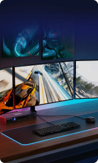

<ion-content class="ion-padding">

    <div class="ion-text-center ion-padding">
      <h1 class="">Har du behov for at kunne <span class="next_build-color">multitaske</span>?</h1>
      <p class="ion-padding">
        Dette kan forkomme ved brug af flere <span class="next_build-color">skærme</span> eller mange <span class="next_build-color">applikationer</span>, der er åbne på samme tid.
      </p>
    </div>
  <ion-grid>
    <ion-row>
      <!-- Billede 1 og knapper -->
      <ion-col size="6">
        
        <button (click)="selectRamCapacity('16')" expand="full">
          Nej
        </button>
      </ion-col>

      <!-- Billede 2 og knapper -->
      <ion-col size="6">
        
        <button (click)="selectRamCapacity('32')" expand="full" >
          Ja
        </button>
      </ion-col>
    </ion-row>
  </ion-grid>
  <ion-col>
    <button (click)="nextPage()" [disabled]="selectedRamCapacity === null">
      Resultater
    </button>
  </ion-col>
</ion-content>
